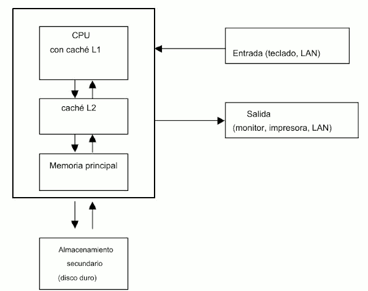

Hardware
Como se muestra en la Figura, una computadora normalmente incluye los siguientes componentes:
- Una CPU, o unidad central de procesamiento, que ejecuta las instrucciones de un programa.
- Una memoria, que contiene las instrucciones y los datos de un programa mientras se ejecuta.
- Un disco duro, utilizado para almacenar programas y datos para que puedan ser cargado en la memoria y accedido por la CPU.
- Un teclado y un ratón, utilizados para la entrada de datos.
- Un monitor, utilizado para mostrar la salida de un programa.
- Un puerto Ethernet para conectarse a Internet o a una red de área local (LAN).
- Otros componentes (no se muestran) como una tarjeta gráfica y un DVD
Las CPU constan de una unidad aritmética lógica (ALU) [también llamada unidad entera (UI)], que realiza operaciones lógicas y aritméticas enteras básicas; una unidad de punto flotante (FPU), que realiza operaciones aritméticas de punto flotante; un conjunto de registros de hardware para almacenar datos y direcciones de memoria; y otro hardware de soporte, incluida una unidad de
control para secuenciar las instrucciones. Cada CPU viene con su propio conjunto de instrucciones, que son las operaciones que puede realizar.